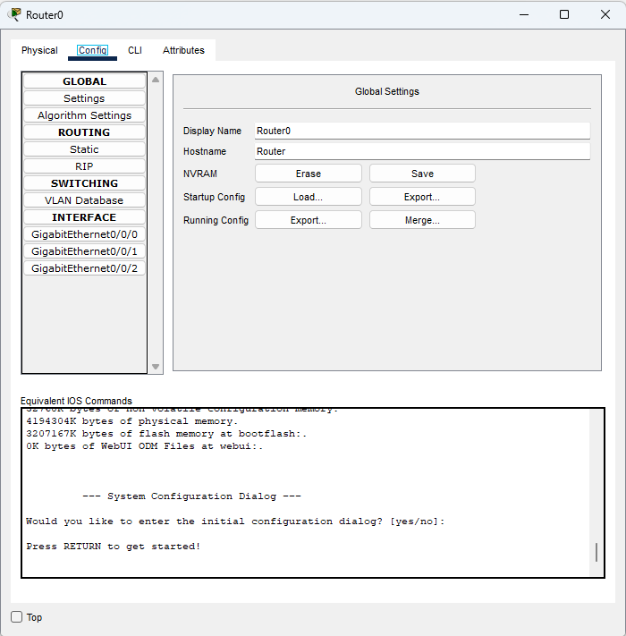
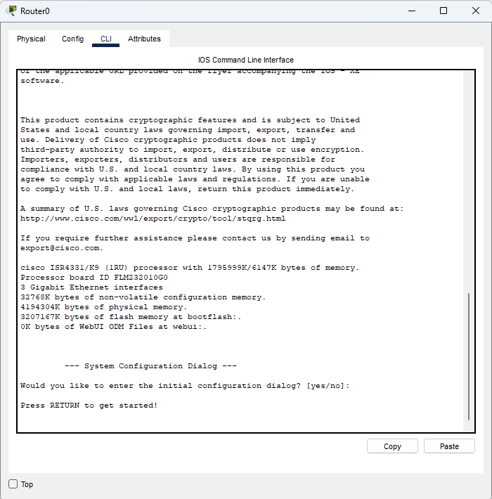

CONFIGURATIONS
La majorité des configuration sur Cisco Packet Tracer sont faites en commande CLI mme si cela est plus compliqué`étant donné qu'il faut savoir quoi écrire
PARTIE CONFIG
Pour accéder à la partie configuration d'un périphérique, il faut cliquer sur celui-ci puis aller dans l'onglet "CONFIGURATION". Nous aurons acces a plusieurs chose. Par exemple pour un routeur, nous pourrons configurer les interfaces réseau, les protocoles de routage, les services divers, etc.
PARTIE CLI
Pour acceder a la partie CLI d'un périphérique, il faut cliquer sur celui-ci puis aller dans l'onglet CLI. A cet endroit nous pourrons tout configurer sur notre routeur ou switch en ligne de commande. C'est la méthode la plus utilisée par les professionnels du réseau.
